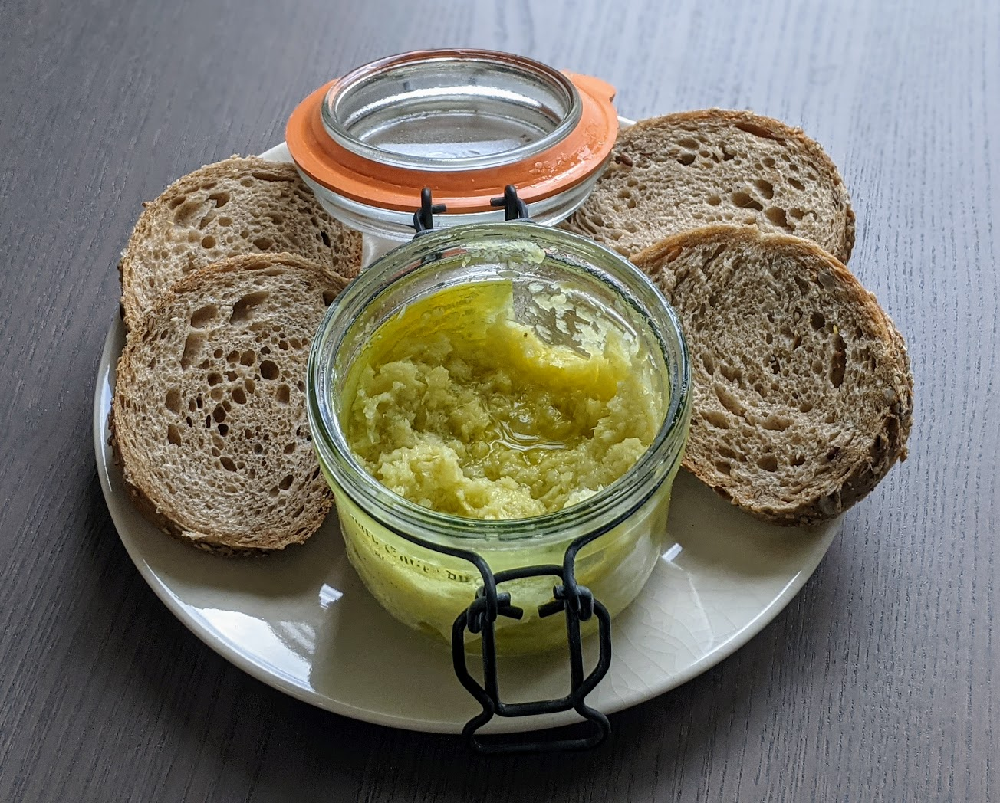

Crème d'ail nouveau

Pour un petit pot de crème :
- Deux têtes d'ail nouveau
- Huile d'olive, sel, poivre
- Laver les têtes d'ail, couper leur tige en petites tranches, puis retirer les gousses en récupérant les petites peaux entres les gousses.
- Mettre les gousses de côté (elles se conservent dans une boîte hermétique au frigo, et peuvent être utilisées comme des gousse d'ail séchés). Faire bouillir un peu d'eau dans une casserole, et mettre les peaux dedans.
- Laisser revenir une minute ou deux (environ jusqu'à ce que l'eau recommence à frémir), puis les égoutter et les laisser sécher une heure ou deux.
- Les mixer avec la moitié de leur poids en huile d'olive. Saler, poivrer, déguster une fois refroidi. Ça se conserve bien une semaine au frigo.
Remarque : c'est plus joli et crémeux si on ne se sert que des membranes entre les gousses d'ail ; on peut aussi se servir des petites tranches de tiges pour agrémenter des plats (un peu comme on utiliserait de l'oignon frais). Dans ce cas, mieux vaut prévoir au moins trois têtes d'ail nouveau pour avoir une quantité raisonnable de crème d'ail.